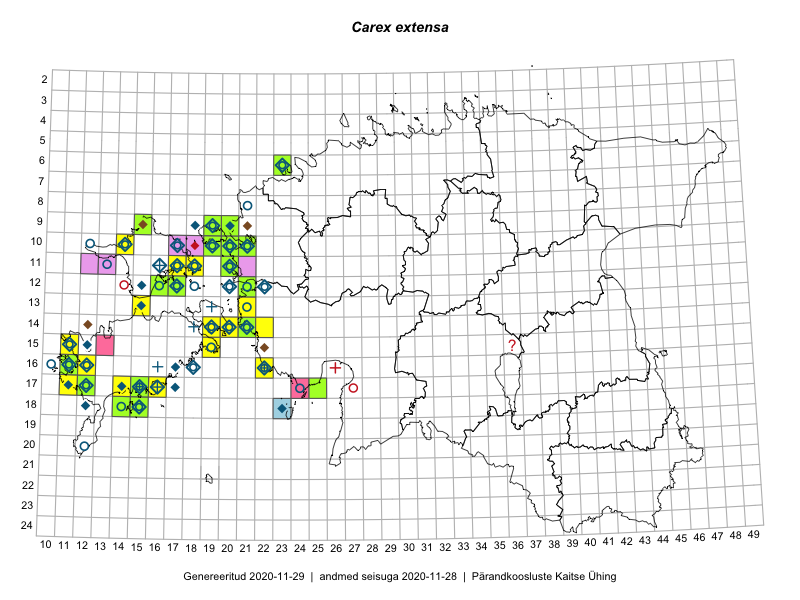

Carex extensa
Uuendatud: 2016-12-01
Kaardile koondatud taksonid: Carex extensa Gooden.

Kaart põhineb 40 kirjel.
Kuvatud viited 20 esimesele andmebaasikirjele, ülejäänud PlutoFis
- Toomas Kukk: 2014-06-18: 18-15: ala
- Toomas Kukk: 2014-06-18: 18-14: ala
- Toomas Kukk: 2014-06-18: 18-14: GPS punkt
- Toomas Kukk: 2014-06-18: 18-15: GPS punkt
- Toomas Kukk: 2014-06-19: 17-14: GPS punkt
- Meeli Mesipuu: 2015-07-11: 14-19: ala
- Eeva-Maria Jeletsky, Tarmo Niitla: 2015-06-21: 12-16: ala
- Triin Reitalu, Mari Reitalu: 2015-06-29: 15-11: ala
- Triin Reitalu, Mari Reitalu: 2015-06-29: 15-11: GPS punkt
- Mari Reitalu: 2015-05-22: 16-11: ala
- Mari Reitalu: 2015-05-22: 16-11: GPS punkt
- Maria Abakumova, Helle Mäemets: 2015-07-03: 17-34: ala
- Meeli Mesipuu: 2015-06-20: 14-19: ala
- Meeli Mesipuu: 2015-06-20: 14-19: GPS punkt
- Meeli Mesipuu: 2015-06-20: 14-19: GPS punkt
- Meeli Mesipuu, Kadri Tali: 2015-06-26: 14-20: ala
- Triin Reitalu, Mari Reitalu: 2015-08-09: 16-11: ala
- Triin Reitalu, Mari Reitalu: 2015-08-09: 16-11: GPS punkt
- Sirje Azarov, Mari Reitalu: 2015-06-22: 16-11: ala
- Sirje Azarov, Mari Reitalu: 2015-06-22: 16-11: GPS punkt